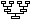
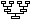

Descendance d'Ignace Douxchamps : Cinquième Génération
Fraipont, Bernadette  (° 29 avril 1937 Marchin, Belgique - ) 
(° 29 avril 1937 Marchin, Belgique - ) 
× 1 mai 1965 Bouchat, Georges  (° 27 février 1936 Strépy-Bragquegnies, Belgique - † 1983 )
(° 27 février 1936 Strépy-Bragquegnies, Belgique - † 1983 )
De cette union sont nés :
Bouchat, Fabienne (° 10 août 1966 Namur, Belgique - )
Bouchat, Hubert (° 29 novembre 1970 Ixelles, Belgique - )
Bouchat, Pierre (° 19 janvier 1976 - )
Fraipont, Christiane (° 6 août 1938 Marchin, Belgique - )
× 6 avril 1961 Loop, Joseph (° 5 août 1933 - )
De cette union sont nés :
Loop, Paul (° 16 mars 1962 Gijón, Espagne - )
Loop, Philippe (° 13 juillet 1963 Bruxelles, Belgique - )
Loop, Anne-Françoise (° 24 septembre 1964 Etterbeek, Belgique - )
Loop, Bernard (° 20 décembre 1967 Bruxelles, Belgique - )
Loop, Sophie (° 19 octobre 1973 Uccle, Belgique - )
Fraipont, Martine (° 25 septembre 1944 Marchin, Belgique - )
× 30 juillet 1964 Destexhe, Lucien (° 1939 - )
De cette union sont nés :
Destexhe, Benoît (° 26 juin 1965 Liège, Belgique - )
Destexhe, Véronique (° 27 octobre 1966 - )
Destexhe, Geneviève (° 29 janvier 1969 Liège, Belgique - )
Destexhe, Geoffroy (° 11 février 1973 Liège, Belgique - )
Fierens, Jean (° 28 décembre 1941 Etterbeek, Belgique - )
× 16 avril 1966 Dopchie, Anne-Marie (° 4 mars 1944 Renaix, Belgique - )
De cette union sont nés :
Fierens, Jean-Charles (° 15 mars 1967 Bruxelles, Belgique - )
Fierens, Nathalie (° 12 novembre 1968 Bruxelles, Belgique - )
Fierens, Benoît (° 31 août 1972 Bruxelles, Belgique - )
Fierens, Colette (° 18 avril 1943 Ixelles, Belgique - )
× 22 septembre 1967 Thomas, Jean-Dominique (° 19 septembre 1939 Ransart, Belgique - )
De cette union sont nés :
Thomas, Pierre-Yves (° 7 décembre 1970 Lyon, France - )
Thomas, Patrick (° 30 septembre 1972 Charleroi, Belgique - )
Thomas, Véronique (° 22 octobre 1976 Charleroi, Belgique - )
de Lathuy, Geneviève (° 13 mai 1923 Bruxelles, Belgique - )
De cette union sont nés :
Kalan, Patricia (° 1946 - )
de Lathuy, Philippe (° 16 mars 1926 Bruxelles, Belgique - † 5 janvier 1971 Bruxelles, Belgique)
× 26 avril 1958 Greiner, Marinette (° 4 novembre 1932 Liège, Belgique - )
De cette union sont nés :
de Lathuy, Bernard (° 17 février 1959 Uccle, Belgique - )
de Lathuy, Olivier (° 5 février 1961 Uccle, Belgique - )
de Lathuy, Roland (° 27 décembre 1962 Uccle, Belgique - )
de Lathuy, Diane (° 24 juin 1965 Uccle, Belgique - )
Trammel, Ghislaine (° 24 août 1933 Longbeach, Californie, USA - )
× 25 septembre 1959 Morris, Willie (° 19 décembre 1919 Dewsbury, Yorkshire, Grande Bretagne - )
De cette union sont nés :
Morris, Peter (° 9 juillet 1960 Amman, Jordanie - )
Morris, David (° 11 juin 1962 Amman, Jordanie - )
Morris, Stephen (° 19 octobre 1963 Weybridge, Surrey, Grande Bretagne - )
Hamoir, Etienne (° 17 avril 1913 Champion, Belgique - )
× 12 octobre 1948 de Creeft, Daisy (° 10 avril 1924 Kortenberg, Belgique - )
De cette union sont nés :
Hamoir, Christian (° 28 août 1949 Ixelles, Belgique - )
Hamoir, Jean-Pierre (° 23 avril 1955 Uccle, Belgique - )
Hamoir, Jacqueline (° 3 juin 1956 Uccle, Belgique - )
Hamoir, Charles (° 6 mai 1916 Namur, Belgique - † Inconnue )
× 22 août 1950 de Creeft, Eliane (° 16 novembre 1914 Kortenberg, Belgique - )
De cette union sont nés :
Hamoir, Viviane (° 14 août 1951 Uccle, Belgique - )
Hamoir, Christiane (° 6 décembre 1917 Namur, Belgique - † 17 novembre 1970 )
× 15 mars 1944 Marchant, Charles-Louis (° 3 novembre 1913 Omal, Belgique - )
De cette union sont nés :
Marchant, Alain (° 6 mars 1945 Ixelles, Belgique - )
Marchant, Jean-Pierre (° 9 juin 1946 Ixelles, Belgique - )
Marchant, Joëlle (° 12 juillet 1956 Saint-Josse-ten-Noode, Belgique - )
Hamoir, Vincent (° 8 août 1923 Namur, Belgique - )
× 8 septembre 1948 Limpens, Béatrice (° 22 novembre 1923 St-Gillis, Belgique - † Inconnue )
De cette union sont nés :
Hamoir, Anne-Marie (° 27 juillet 1949 Etterbeek, Belgique - )
Hamoir, Gabrielle (° 16 septembre 1950 Overijse, Belgique - )
Hamoir, Evelyne (° 5 février 1952 Overijse, Belgique - )
Hamoir, Paul-André (° 25 janvier 1954 Overijse, Belgique - )
Hamoir, Philippe-Paul (° 13 septembre 1955 Overijse, Belgique - )
Hamoir, Michel (° 10 mai 1957 Overijse, Belgique - )
Hamoir, Françoise (° 11 mars 1925 Namur, Belgique - )
× 21 janvier 1947 Paquot, Paul (° 27 octobre 1914 Valkenburg, Pays Bas - )
De cette union sont nés :
Paquot, Christiane (° 25 décembre 1947 Uccle, Belgique - )
Paquot, Edouard (° 15 mai 1950 Eupen, Belgique - )
Paquot, Emmanuel (° 1 janvier 1953 Gemmenich, Belgique - )
Richard, Nadine (° 15 septembre 1930 Namur, Belgique - )
× 7 mai 1960 Urbain, André (° 22 septembre 1931 Pâturages, Belgique - )
De cette union sont nés :
Urbain, Xavier (° 1 mai 1961 Namur, Belgique - )
Urbain, Benoît (° 3 mai 1963 Namur, Belgique - )
Urbain, Agnès (° 29 mai 1966 Namur, Belgique - )
Urbain, Vincent (° 29 juin 1967 Namur, Belgique - )
Richard, Jacqueline (° 16 novembre 1935 Namur, Belgique - )
× 10 août 1956 Poiré, Emmanuel (° 18 décembre 1928 Muno, Belgique - )
De cette union sont nés :
Poiré, Véronique (° 18 août 1957 Namur, Belgique - )
Poiré, Damienne (° 14 mai 1960 Namur, Belgique - )
Waucquez, Brigitte (° 7 septembre 1932 Bruxelles, Belgique - )
× 3 avril 1954 Langton, John (° 1 janvier 1926 Kampala, Uganda - )
De cette union sont nés :
Langton, Michael (° 31 janvier 1955 Horsham, Sussex, Grande Bretagne - )
Langton, Derek (° 8 février 1957 La Valette, Malte - )
Langton, Trevor (° 31 octobre 1959 Newcastle upon Tyne, Northumberland, Grande Bretagne - )
Langton, Martine (° 26 avril 1963 Takeley, Essex, Grande Bretagne - )
Waucquez, Catherine (° 31 août 1933 Bruxelles, Belgique - )
× 17 juillet 1954 d'Espinay Saint-Luc, Bertand (° 4 juin 1928 Boulogne-sur-Seine, France - )
De cette union sont nés :
d'Espinay Saint-Luc, Véronique (° 26 septembre 1956 Bruges, Belgique - )
d'Espinay Saint-Luc, Fabienne (° 3 décembre 1958 Alger, Algérie - )
d'Espinay Saint-Luc, Gaultier (° 29 septembre 1962 Fresnes, France - )
Waucquez, Patrick (° 21 février 1936 Bruxelles, Belgique - )
× 29 avril 1965 Vandendriessche, Marie-Jeanne
De cette union sont nés :
Waucquez, Sylvie (° 18 mai 1967 Uccle, Belgique - )
Waucquez, Ronald (° 7 octobre 1937 Bruxelles, Belgique - )
× 18 avril 1964 Nicolaï de Gorhez, Claudine (° 10 août 1944 Liège, Belgique - † Inconnue )
De cette union sont nés :
Waucquez, Virginie (° 9 juillet 1968 Uccle, Belgique - )
Waucquez, Cédric (° 3 avril 1971 Uccle, Belgique - )
Madelin, Philippe (° 15 janvier 1939 Toulon, France - )
× 16 septembre 1965 Pellissier, Nicole
De cette union sont nés :
Madelin, Caroline (° 2 août 1966 Paris, France - )
Madelin, Cécile (° 2 octobre 1968 Toulon, France - )
Madelin, Juliette (° 7 décembre 1971 Toulon, France - )
de Brouwer, Olivier (° 14 mai 1940 Ville-Pommeroeul, Belgique - )
De cette union sont nés :
de Brouwer, Amélie (° 1980 - )
de Brouwer, Eliane (° 20 juillet 1941 Ixelles, Belgique - )
× 6 juin 1964 de Failly, François (° 16 mars 1936 Etterbeek, Belgique - )
De cette union sont nés :
de Failly, Valérie (° 1 avril 1965 Bruges, Belgique - )
de Failly, Diane (° 4 mai 1966 Bruges, Belgique - )
Note : soeur jumelle de Gaëlle.
de Failly, Gaëlle (° 4 mai 1966 Bruges, Belgique - )
Note : Soeur jumelle de Diane.
de Failly, Olivia (° 19 juin 1970 Assebroek, Belgique - )
de Brouwer, Dorys (° 24 juin 1945 Mons, Belgique - )
× 22 septembre 1967 Mols, Jean-Marie (° 1 novembre 1941 Auvelais, Belgique - )
De cette union sont nés :
Mols, Vanessa (° 23 décembre 1968 Boston, Massachusetts, USA - )
Mols, Jessica (° 2 septembre 1971 Boston, Massachusetts, USA - )
de Brouwer, Didier (° 9 septembre 1946 Bruges, Belgique - )
× 4 septembre 1971 de Potter d'Indoye, Annick (° 27 octobre 1950 Uccle, Belgique - )
De cette union sont nés :
de Brouwer, Rodolphe (° 1973 - )
de Brouwer, Géraldine (° 1975 - )
de Brouwer, Jonathan (° 1980 - )
de Brouwer, Véronique (° 1 décembre 1947 Bruges, Belgique - )
De cette union sont nés :
Széchényi, Stéphanie (° 1981 - )
de Brouwer, Marie-Joëlle (° 14 juillet 1949 Bruges, Belgique - )
× 2 octobre 1971 de Jacquier de Rosée, Guy (° 5 octobre 1947 Aartrijke, Belgique - )
De cette union sont nés :
de Jacquier de Rosée, Grégory (° 14 mai 1973 Bruges, Belgique - )
de Jacquier de Rosée, Elise (° 1977 - )
de Jacquier de Rosée, Lara (° 1980 - )
de Brouwer, Wilfrid-Arnold (° 6 mars 1954 Bruges, Belgique - )
De cette union sont nés :
de Brouwer, Antoine (° 1981 - )
de Brouwer, Julien (° 1985 - )
de Brouwer, Alix (° 29 décembre 1955 Bruges, Belgique - )
× 6 août 1983 Olawaiye, Fesobi (° 6 avril 1952 Erijiyan, Nigéria - )
De cette union sont nés :
Olawaiye, Ayo-Melodie (° 2 mai 1985 Bruxelles, Belgique - )
Olawaiye, Durotimi (° 1987 - )
Vielle, Eliane (° 15 juillet 1933 Ixelles, Belgique - † 9 janvier 2010 Houtain-le-Val, Belgique)
× 13 mars 1956 Debucquois, Jean-Paul (° 21 septembre 1930 Uccle, Belgique - )
De cette union sont nés :
Debucquois, Carine (° 21 juin 1958 Etterbeek, Belgique - )
Debucquois, Jean-Charles (° 7 janvier 1960 Boma, République Démocratique du Congo - )
Debucquois, Yvan (° 14 juin 1965 Etterbeek, Belgique - )
Debucquois, Ariane (° 16 novembre 1966 Etterbeek, Belgique - )
Vielle, Jean-Pierre (° 10 février 1935 Bruxelles, Belgique - )
× 1 mai 1964 Calzada-Gomez, Leticia (° 23 janvier 1939 San Luis de la Paz, Guanajuato, México - )
De cette union sont nés :
Vielle, Jean-Philippe (° 28 janvier 1965 Monterrey, Nuevo León, Mexique - )
Vielle, Patrick (° 22 mars 1968 Monterrey, Nuevo León, Mexique - )
Vielle, Guy (° 9 novembre 1938 Neuchâtel, Suisse - )
× 31 octobre 1964 Van Reeth, Christiane (° 29 septembre 1940 Berchem, Belgique - )
De cette union sont nés :
Vielle, Pascale (° 5 septembre 1965 Etterbeek, Belgique - )
Vielle, Christophe (° 5 février 1967 Uccle, Belgique - )
Vielle, Laurence (° 6 septembre 1968 Uccle, Belgique - )
Vielle, Anne (° 19 juillet 1971 Uccle, Belgique - )
Vielle, Chantal (° 31 décembre 1939 Neuchâtel, Suisse - )
× 25 août 1962 du Monceau de Bergendal, John (° 6 avril 1938 Mortsel, Belgique - )
De cette union sont nés :
du Monceau de Bergendal, Véronique (° 4 août 1963 Ixelles, Belgique - )
du Monceau de Bergendal, Sybille (° 24 décembre 1964 Ixelles, Belgique - )
du Monceau de Bergendal, Géraldine (° 16 janvier 1966 Ixelles, Belgique - )
du Monceau de Bergendal, Charlotte (° 12 avril 1969 Ixelles, Belgique - )
du Monceau de Bergendal, Marie-Gaëlle (° 1974 - )
du Monceau de Bergendal, Axel (° 1983 - )
Douxchamps, Baudhuin (° 17 septembre 1938 Etterbeek, Belgique - )
Note : Il a été nommé en 1984 collateur de la Fondation Paul Douxchamps en remplacement de Léon Douxchamps.
× 4 mai 1974 Pacco, Marie-Paule (° 24 mars 1946 Lillois-Witterzée, Belgique - )
De cette union sont nés :
Douxchamps, Baudhuin (° 2 octobre 1975 Uccle, Belgique - )
Douxchamps, Pierre-Alexis (° 1 mars 1977 Uccle, Belgique - )
Douxchamps, François-Xavier (° 28 juillet 1978 Uccle, Belgique - )
Douxchamps, Nicole (° 17 juin 1940 Vaux-sur-Mer, France - † 8 décembre 2001 Wezembeek-Oppem, Belgique)
× 30 juillet 1964 Le Begge, Maximilien (° 6 janvier 1939 Gand, Belgique - † 22 août 2010 Wezembeek-Oppem, Belgique)
Douxchamps, Vinciane (° 30 janvier 1948 Schaerbeek, Belgique - )
× 23 mars 1968 de Valensart Schoenmaeckers, Vincent (° 23 décembre 1944 Erps-Kwerps, Belgique - )
De cette union sont nés :
de Valensart Schoenmaeckers, Virginie (° 16 décembre 1968 Uccle, Belgique - )
de Valensart Schoenmaeckers, Christel (° 19 juin 1972 Uccle, Belgique - )
de Valensart Schoenmaeckers, Thibaud-Maximilien (° 1973 Uccle, Belgique - )
Philippe, Dominique (° 2 septembre 1951 Lubumbashi, République Démocratique du Congo - )
× Meyer, Robert (° 20 septembre 1947 Lyon, France - )
De cette union sont nés :
Meyer, Samuel (° 21 décembre 1991 Verviers, Belgique - )
Philippe, Eric (° 20 février 1954 Lubumbashi, République Démocratique du Congo - )
Philippe, Jacques (° 19 novembre 1955 Kolwezi, République Démocratique du Congo - )
× 17 mars 1978 Dannaux, Micheline (° 20 avril 1955 Uccle, Belgique - )
De cette union sont nés :
Philippe, Pascaline (° 25 février 1981 Petite-Anse, Haiti - )
Philippe, Simon (° 16 octobre 1981 Woluwe-Saint-Lambert, Belgique - )
Philippe, Kim (° 25 janvier 1983 Woluwe-Saint-Lambert, Belgique - )
Philippe, Manoël (° 1 septembre 1983 Medellín del Ariari, Colombie - )
Philippe, Quentin (° 16 octobre 1984 Woluwe-Saint-Lambert, Belgique - )
Philippe, Anouchka (° 3 décembre 1985 Salvador, Bahia, Brésil - )
Philippe, Timothée (° 11 décembre 1986 Woluwe-Saint-Lambert, Belgique - )
Philippe, Déborah (° 9 septembre 1987 Metz, France - )
Philippe, Yannick (° 1988 - † 1997 )
Philippe, Gabrielle (° 23 août 1988 Berchem-Saint-Agathe, Belgique - )
Philippe, Nathanaëlle (° 22 décembre 1989 Berchem-Saint-Agathe, Belgique - )
Philippe, Meryem (° 30 juillet 1991 Berchem-Saint-Agathe, Belgique - )
Philippe, Jean-Baptiste (° 18 août 1993 Berchem-Saint-Agathe, Belgique - )
Philippe, François (° 5 mai 1995 Berchem-Saint-Agathe, Belgique - )
Philippe, Barnabé (° 8 janvier 1999 Berchem-Saint-Agathe, Belgique - )
Eloy, Louis (° 21 juin 1938 Bruxelles, Belgique - † Bruxelles, Belgique)
× 31 juillet 1961 Mosneron Dupin, Marie-Aline (° 23 juin 1938 Nantes, France - )
De cette union sont nés :
Eloy, Louis-Nicolas (° 12 septembre 1962 Louvain, Belgique - )
Eloy, Nicolas (° 10 mai 1966 Louvain, Belgique - )
Eloy, Philippe (° 25 août 1968 Guérande, France - )
Eloy, Monique (° 27 novembre 1939 Alsemberg, Belgique - )
× 22 janvier 1966 Bribosia, Didier (° 25 avril 1939 Mont-sur-Marchienne, Belgique - )
De cette union sont nés :
Bribosia, Alexis (° 31 octobre 1966 Uccle, Belgique - )
Bribosia, Emmanuelle (° 1 décembre 1967 Uccle, Belgique - † 1 décembre 1967 Uccle, Belgique)
Bribosia, Gauthier (° 21 mars 1969 Uccle, Belgique - )
Bribosia, Anne-Valérie (° 15 avril 1971 Uccle, Belgique - )
Bribosia, Benjamin (° 2 juillet 1974 Ixelles, Belgique - )
Eloy, Pierre (° 30 janvier 1942 Etterbeek, Belgique - † 2002 Saint-Malo, France)
× 25 juin 1966 Jourdain, Sylvie (° 18 janvier 1948 Gand, Belgique - )
De cette union sont nés :
Eloy, Nathalie (° 18 novembre 1966 Uccle, Belgique - )
Eloy, Géraldine (° 8 janvier 1968 Uccle, Belgique - )
× Hamelin, Marie-Christine (° 3 avril 1949 - )
De cette union sont nés :
Eloy, Jean-Malo (° 20 mars 1976 - )
Eloy, Jacques (° 22 août 1945 Uccle, Belgique - )
× Judic, Bernadette (° 26 mai 1958 Guérande, France - )
De cette union sont nés :
Eloy, Sébastien (° 30 décembre 1983 Saint-Nazaire, France - )
Eloy, Xavier (° 30 décembre 1983 Saint-Nazaire, France - )
Eloy, Eugénie (° 2 février 1988 Nantes, France - )
Eloy, Anne-Katherine (° 26 mai 1949 Uccle, Belgique - )
× 27 juin 1970 Toussaint, Jean (° 1946 - )
De cette union sont nés :
Douxchamps, Christine (° 1 septembre 1944 Ixelles, Belgique - )
× 19 septembre 1969 Gillain, Etienne (° 19 février 1946 Ath, Belgique - )
De cette union sont nés :
Gillain, Antoine (° 17 septembre 1971 Uccle, Belgique - )
Gillain, Juliette (° 13 mai 1974 Uccle, Belgique - )
Douxchamps, Francis (° 2 mai 1954 Uccle, Belgique - † 1997 Lokeren, Belgique)
De cette union sont nés :
Douxchamps, Elliot (° 1989 - )
Douxchamps, Hervé (° 5 août 1943 Ghlin, Belgique - )
× 28 octobre 1967 de Wouters d'Oplinter, Josiane (° 7 février 1946 Vechmael, Belgique - )
De cette union sont nés :
Douxchamps, Fabienne (° 26 octobre 1972 Uccle, Belgique - )
Douxchamps, Philippe (° 31 juillet 1945 Ghlin, Belgique - )
× 24 décembre 1970 van Doorslaer de ten Ryen, Marie-Madeleine (° 9 juin 1948 Sint-Niklaas, Belgique - )
De cette union sont nés :
Douxchamps, Isabelle (° 14 novembre 1972 Etterbeek, Belgique - )
Douxchamps, Catherine (° 5 octobre 1974 - )
Douxchamps, Véronique (° 3 juillet 1981 - )
Douxchamps, Alain (° 19 mars 1948 Mons, Belgique - )
Note : Il a été nommé en 1977 collateur de la Fondation Paul Douxchamps en remplacement de Minette de Ville de Goyet, décédée.
× 25 mars 1972 Stévenart, Wivine (° 3 mai 1946 Etterbeek, Belgique - )
De cette union sont nés :
Douxchamps, Benoît (° 14 juin 1973 Ixelles, Belgique - )
Douxchamps, Damien (° 1975 - )
Douxchamps, Grégoire (° 14 juillet 1978 Ixelles, Belgique - )
Douxchamps, Sabine (° 1981 - )
Douxchamps, Laure-Anne (° 10 mai 1985 Ixelles, Belgique - )
Douxchamps, François (° 23 août 1949 Mons, Belgique - )
× 22 décembre 1973 Nolf, Bernadette (° 2 décembre 1949 Melle, Belgique - )
De cette union sont nés :
Douxchamps, Olivier (° 4 octobre 1974 Etterbeek, Belgique - )
Douxchamps, Nicolas (° 24 septembre 1976 Etterbeek, Belgique - )
Douxchamps, Géraldine (° 1979 - † 1979 )
Douxchamps, Christophe (° 1980 Etterbeek, Belgique - )
Douxchamps, Armelle (° 10 avril 1956 Wemmel, Belgique - )
× 8 juillet 1978 Oldenhove de Guertechin, Michel (° 11 juillet 1953 Uccle, Belgique - )
De cette union sont nés :
Oldenhove de Guertechin, Florence (° 18 février 1980 Namur, Belgique - )
Oldenhove de Guertechin, Pauline (° 7 mai 1982 Namur, Belgique - )
Oldenhove de Guertechin, Antoine (° 17 avril 1985 Namur, Belgique - † 2000 )
Oldenhove de Guertechin, Julie (° 8 janvier 1988 Namur, Belgique - )
Lowe, Richard (° 27 juillet 1939 Quetta, Balouchistan, Pakistan - )
× 23 mars 1963 Green-Price, Roseanne (° 31 juillet 1943 Knighton, Shropshire, Grande Bretagne - )
De cette union sont nés :
Lowe, Timothy (° 22 septembre 1963 Timworth, Suffolk, Grande Bretagne - )
Lowe, Deborah (° 17 novembre 1965 Hong Kong, Chine - )
Lowe, Sophie (° 1969 - )
De cette union sont nés :
De cette union sont nés :
Lowe, Jonathan (° 6 octobre 1942 Naini Tal, Uttaranchal, Inde - )
× 28 mars 1970 Stehr, Janet (° 23 juillet 1947 Klagenfurt, Autriche - )
De cette union sont nés :
Lowe, Jennifer (° 1974 - )
Lowe, Antoinette (° 23 novembre 1945 Bareilly, Uttar Pradesh, Inde - )
× 5 août 1967 Charteris, John (° 24 septembre 1940 Locharbriggs, Dumfries, Grande Bretagne - )
De cette union sont nés :
Charteris, Camilla (° 10 septembre 1968 Penang, Pulau Pinang, Malaisie - )
Charteris, Annabel (° 27 juillet 1970 - )
Charteris, John Nicholas (° 1977 - )
Lowe, Clive (° 11 décembre 1947 Mumbay, Maharashtra, Inde - )
De cette union sont nés :
Lowe, Geraldine (° 19 mai 1950 Bradninch, Devonshire, Grande Bretagne - )
De cette union sont nés :
Marling-Roberts, Amelia (° 1979 - )
Marling-Roberts, Clementine (° 1982 - )
Jones, Jennifer (° 25 décembre 1941 Dehna, Punjab, Pakistan - )
× 3 août 1962 Carpendale, Richard (° 11 mars 1935 Dublin, Ireland - )
De cette union sont nés :
Carpendale, Hugo (° 9 mai 1964 Weymouth, Dorset, Grande Bretagne - )
Carpendale, Diccon (° 1 mars 1966 - )
Jones, Vikkie (° 5 août 1947 Münster, Allemagne - )
× Maclaren, Shaun (° 15 février 1952 York, Yorkshire, Grande Bretagne - )
De cette union sont nés :
Maclaren, Zoe (° 24 janvier 1975 - )
Maclaren, Rupert (° 7 mai 1976 Münster, Allemagne - )
Maclaren, Holy (° 1979 - † 1979 )
Dallemagne, Guillaume (° 13 août 1947 Liège, Belgique - )
× 13 janvier 1970 de Maere, Josette (° 11 octobre 1949 Liège, Belgique - )
De cette union sont nés :
Dallemagne, Véronique (° 4 mars 1971 Hermalle-sous-Argenteau, Belgique - )
Dallemagne, Bernard (° 7 mars 1975 Hermalle-sous-Argenteau, Belgique - )
Dallemagne, Claire (° 3 décembre 1948 Liège, Belgique - )
× 14 août 1969 de San, Gérald (° 18 décembre 1947 Bâle, Suisse - )
De cette union sont nés :
de San, Rodrigue (° 3 juin 1970 Uccle, Belgique - )
de San, Frédéeic (° 22 février 1973 Kigali, Rwanda - )
Dallemagne, Marc (° 9 mai 1950 Liège, Belgique - )
× Oct 1977 Moineau, Jacqueline
De cette union sont nés :
Dallemagne, Denis (° 17 septembre 1951 Liège, Belgique - † 5 novembre 1992 Argenteau, Belgique)
× 23 janvier 1982 Clesse, Sabine
De cette union sont nés :
Dallemagne, Maud (° 26 juin 1982 Oupeye, Belgique - )
Dallemagne, Sarah (° 5 février 1985 Oupeye, Belgique - )
Dallemagne, Brigitte (° 28 décembre 1958 Hermalle-sous-Argenteau, Belgique - )
× 1982-1983 Bourdouxhe, Didier (° 27 avril 1955 Seraing - )
De cette union sont nés :
de Ville de Goyet, Patrick (° 17 juillet 1950 Louvain, Belgique - † 10 juin 2003 Sao Paulo, Brésil)
× van Oldeneel tot Oldenzeel, Myriam (° 18 mars 1952 - )
De cette union sont nés :
de Ville de Goyet, Cédric (° 4 octobre 1979 Sao Paulo, Brésil - )
de Ville de Goyet, Benoît (° 6 juin 1952 Louvain, Belgique - )
× 14 août 1976 Wagemans, Cécile (° 20 mars 1952 Uccle, Belgique - )
De cette union sont nés :
de Ville de Goyet, Sophie (° 22 avril 1977 Namur, Belgique - )
de Ville de Goyet, Catherine (° 8 janvier 1980 Namur, Belgique - )
de Ville de Goyet, Vincent (° 26 novembre 1982 Namur, Belgique - )
de Ville de Goyet, Anne (° 23 décembre 1953 Louvain, Belgique - )
× van Oldeneel tot Oldenzeel, Yves
De cette union sont nés :
van Oldeneel tot Oldenzeel, Loïc (° 1978 - )
van Oldeneel tot Oldenzeel, Auriane (° 1980 - )
de Ville de Goyet, Martine (° 18 juin 1957 Louvain, Belgique - )
Henroz, Marcelo (° 5 mars 1938 Sao Paulo, Brésil - † 15 avril 1981 Sao Paulo, Brésil)
× 5 décembre 1964 de Aquino, Maria (° 8 mars 1943 Araçatuba, Brésil - )
De cette union sont nés :
Henroz, Silvia-Regina (° 6 décembre 1965 Sao Paulo, Brésil - )
Henroz, Marcelo-Sergio (° 26 août 1968 Sao Paulo, Brésil - )
Henroz, Priscilla-Silvia (° 13 juillet 1969 Sao Paulo, Brésil - )
Henroz, Marcela (° Sao Paulo, Brésil - )
Stevens, Jean-Pierre (° 11 juillet 1938 Buenos Aires, Argentine - )
× 31 août 1963 Tresca, Françoise (° 21 décembre 1936 Buenos Aires, Argentine - )
De cette union sont nés :
Stevens, Dominique (° 1 août 1964 Buenos Aires, Argentine - )
Stevens, Nathalie (° 21 septembre 1966 Buenos Aires, Argentine - )
Stevens, Adeline (° 10 août 1971 Buenos Aires, Argentine - )
Stevens, Michel (° 9 avril 1943 Buenos Aires, Argentine - )
× 6 octobre 1971 Tieghi, Rosa-Inès (° 13 juillet 1938 Buenos Aires, Argentine - )
Davreux, Marguerite (° 11 mai 1947 Buenos Aires, Argentine - )
× 10 octobre 1970 Godin, Damien (° 31 janvier 1943 Ensival, Belgique - † 25 avril 1988 Faimes, Belgique)
De cette union sont nés :
Godin, Hubert (° 15 août 1971 Huy, Belgique - )
Godin, Agnès (° 1972 Huy, Belgique - )
Godin, Vincent (° 1975 Huy, Belgique - )
Godin, Bertrand (° 30 avril 1978 Huy, Belgique - )
× 6 octobre 2011 Charles, Philippe (° 1941 - )
Davreux, Anne-Marie (° 19 octobre 1948 Buenos Aires, Argentine - )
De cette union sont nés :
de Changy, Guennaëlle (° 1976 - )
de Changy, Jordane (° 1981 - )
Davreux, François (° 18 avril 1950 Buenos Aires, Argentine - )
Note : Il a été nommé en 1978 collateur de la Fondation Paul Douxchamps en remplacement d'Yves Douxchamps qui avait démissionné.
× della Faille d'Huysse, Bénédicte
De cette union sont nés :
Davreux, Bernard (° 18 septembre 1951 Namur, Belgique - )
× de Jamblinne de Meux, Brigitte
De cette union sont nés :
Davreux, Sybille (° 1977 - )
Regout, Jean-Marc (° 19 avril 1949 Uccle, Belgique - )
De cette union sont nés :
Regout, Maximilien (° 1977 - )
Regout, Christophe (° 1983 - )
Regout, Marie-Alix (° 1989 - )
Regout, Thierry (° 11 août 1952 Liège, Belgique - )
× Janssens de Varebeke, Solange (° 28 juillet 1956 Woluwe-Saint-Lambert, Belgique - )
De cette union sont nés :
Regout, Valérie-Anne (° 14 novembre 1983 Etterbeek, Belgique - )
Regout, Marie-Amélie (° 1989 Meu, Belgique - )
Regout, Adeline (° 9 février 1991 Liège, Belgique - )
Davreux, Geoffroy (° 19 septembre 1947 Neuilly-sur-Seine, France - )
× 4 septembre 1971 Vilmin, Sylvie (° 12 juillet 1949 Villenave-d'Ornon, France - )
De cette union sont nés :
Davreux, Sophie (° 14 mars 1973 Suresnes, France - )
Davreux, Christian (° 3 juin 1951 Neuilly-sur-Seine, France - )
× Masurel, Marie-Joseph (° 30 juillet 1954 Rouen, France - )
De cette union sont nés :
Davreux, Hugues (° 21 avril 1979 Rouen, France - )
Davreux, Alain (° 1980 Rouen, France - )
Davreux, Adeline (° 1984 Rouen, France - )
de Limelette, Jean (° 4 mai 1935 Kinshasa, République Démocratique du Congo - )
× 29 septembre 1970 de Streel, Isabelle (° 13 décembre 1945 Saint-Josse-ten-Noode, Belgique - )
De cette union sont nés :
de Limelette, Claire (° 18 octobre 1971 Yabaonde, République Démocratique du Congo - )
de Limelette, Caroline (° 1975 - )
de Limelette, Aurore (° 1977 - )
de Limelette, Maximilien (° 1980 - )
de Limelette, Lorraine (° 1982 - )
de Limelette, Guy (° 26 décembre 1936 Kinshasa, République Démocratique du Congo - )
× 11 septembre 1965 Farah Gortazar, Concha (° 7 octobre 1940 Guadalajara, Mexique - )
De cette union sont nés :
de Limelette, Jean-Louis (° 16 décembre 1966 Bruxelles, Belgique - )
de Limelette, Carine (° 17 septembre 1968 Guadalajara, Mexique - )
de Limelette, André (° 24 octobre 1970 Guadalajara, Mexique - )
de Limelette, Baudouin (° 26 mai 1938 Kinshasa, République Démocratique du Congo - )
De cette union sont nés :
de Limelette, Geoffroy (° 1979 - )
de Limelette, Yves (° 3 janvier 1941 Bruxelles, Belgique - )
× 21 septembre 1967 Ponteville, Anita (° 16 février 1943 Woluwe-Saint-Pierre, Belgique - )
De cette union sont nés :
de Limelette, Marie (° 1971 - )
de Limelette, Ségolène (° 1973 - )
de Limelette, Corentin (° 1976 - )
de Limelette, David (° 10 juillet 1979 Etterbeek, Belgique - )
de Limelette, Carine (° 10 février 1944 Bruxelles, Belgique - )
× 22 octobre 1966 van de Werve de Schilde, André-Noël (° 25 décembre 1938 Vorselaar, Belgique - )
De cette union sont nés :
van de Werve de Schilde, Jean-Marc (° 14 août 1967 Kamina, République Démocratique du Congo - )
van de Werve de Schilde, Pascale (° 2 décembre 1968 Ixelles, Belgique - )
van de Werve de Schilde, Arnaud (° 16 juin 1970 Huy, Belgique - )
van de Werve de Schilde, Ariane (° 1975 - )
Dumont de Chassart, Emmanuel (° 10 mai 1932 Fleurus, Belgique - † Inconnue )
× 29 août 1957 de Biolley, Chantal (° 5 octobre 1932 Namur, Belgique - † Inconnue )
De cette union sont nés :
Dumont de Chassart, Evelyne (° 31 juillet 1958 Charleroi, Belgique - )
Dumont de Chassart, Emmanuel (° 25 décembre 1960 Charleroi, Belgique - )
Dumont de Chassart, Gaëtan (° 1963 - )
Dumont de Chassart, Christian (° 18 décembre 1934 Fleurus, Belgique - )
× 20 avril 1963 Nève de Mévergnies, Noëlle (° 16 décembre 1941 Etterbeek, Belgique - )
De cette union sont nés :
Dumont de Chassart, Frédéric (° 17 septembre 1964 Charleroi, Belgique - )
Dumont de Chassart, Caroline (° 6 août 1967 Charleroi, Belgique - )
Dumont de Chassart, Luc (° 15 mai 1936 Fleurus, Belgique - † 19 juin 1971 Wagnelée, Belgique)
× 3 mai 1962 Groverman, Kathleen (° 17 juin 1938 Evergem, Belgique - )
De cette union sont nés :
Dumont de Chassart, Wauthier (° 27 juillet 1963 Charleroi, Belgique - )
Dumont de Chassart, Prisca (° 22 novembre 1964 Charleroi, Belgique - )
Dumont de Chassart, Diégo (° 31 janvier 1967 Charleroi, Belgique - )
Dumont de Chassart, Francis (° 25 novembre 1937 Saint-Amand, Belgique - † 30 juin 2008 Saint-Amand, Belgique)
× 12 juillet 1965 Gendarme, Nicole (° 22 juin 1937 Monaco, Principauté de Monaco - † Inconnue )
De cette union sont nés :
Dumont de Chassart, Igor (° 8 août 1967 Kolwezi, République Démocratique du Congo - )
Dumont de Chassart, Alexandre (° 24 août 1969 Ixelles, Belgique - )
Dumont de Chassart, Baudouin (° 3 décembre 1941 Fleurus, Belgique - † Inconnue )
De cette union sont nés :
Dumont de Chassart, Gaëtane (° 1970 - )
Dumont de Chassart, Thibault (° 1972 - )
Dumont de Chassart, Stéphanie (° 1973 - )
Dumont de Chassart, Delphine (° 1981 - )
Dumont de Chassart, Bernadette (° 6 décembre 1943 Fleurus, Belgique - )
× 28 août 1965 Morel de Westgaver, Jacques (° 29 septembre 1935 Bevere, Belgique - )
De cette union sont nés :
Morel de Westgaver, Isabelle (° 24 juillet 1966 Gand, Belgique - )
Morel de Westgaver, Hugues (° 1 août 1967 Gand, Belgique - )
Morel de Westgaver, Tanguy (° 4 novembre 1970 Gand, Belgique - )
Morel de Westgaver, Marina (° 1974 - )
Dulait, Claude (° 23 septembre 1948 Etterbeek, Belgique - )
× Pouppez de Kettenis de Hollaeken, Nathalie
De cette union sont nés :
Dulait, Nicolas (° 1974 - )
Dulait, Dimitri (° 1976 - )
Dulait, Daphné (° 1978 - )
de Neve de Roden, Roger (° 12 février 1942 Bruxelles, Belgique - )
× 30 novembre 1968 Carton de Wiart, Bernadette (° 25 juillet 1944 Uccle, Belgique - )
De cette union sont nés :
de Neve de Roden, Barbara (° 2 mars 1971 Schaerbeek, Belgique - )
de Neve de Roden, Thierry (° 4 août 1974 Uccle, Belgique - )
de Neve de Roden, Etienne (° 27 décembre 1975 Uccle, Belgique - )
de Neve de Roden, André (° 1 juin 1943 Etterbeek, Belgique - )
× 30 août 1969 de la Kethulle de Ryhove, Caroline (° 28 février 1943 Gand, Belgique - )
De cette union sont nés :
de Neve de Roden, Alexandra (° 2 septembre 1970 Schaerbeek, Belgique - )
de Neve de Roden, Anne-Catherine
de Neve de Roden, Oriane (° 1975 - )
de Neve de Roden, Guerric (° 1982 - )
de Neve de Roden, François-Emmanuel (° 16 décembre 1944 Etterbeek, Belgique - )
× 5 septembre 1970 D'ursel, Françoise (° 11 janvier 1949 Louvain, Belgique - )
De cette union sont nés :
de Neve de Roden, Géraud (° 10 mai 1972 Ixelles, Belgique - )
de Neve de Roden, Quentin (° 1975 - )
de Neve de Roden, Grégoire (° 1981 - )
de Neve de Roden, Thibault (° 1983 - )
de Neve de Roden, Bérengère (° 1986 - )
de Neve de Roden, Didier (° 1950 - )
De cette union sont nés :
de Neve de Roden, Geoffroy (° 1978 - )
de Neve de Roden, Sandrine (° 1981 - )
de Neve de Roden, Mathieu (° 1985 - )
de Neve de Roden, Gaëtan (° 1989 - )
de Limelette, Diane (° 1946 - )
De cette union sont nés :
Vander Heyden, Claude (° 2 août 1935 Liège, Belgique - )
× 30 novembre 1963 Blanpain, Cecile (° 10 novembre 1938 Etterbeek, Belgique - )
De cette union sont nés :
Vander Heyden, Olivier (° 16 février 1965 Anderlecht, Belgique - )
Vander Heyden, Bénédicte (° 5 juin 1966 Anderlecht, Belgique - )
Vander Heyden, Bertrand (° 21 septembre 1968 Anderlecht, Belgique - )
Vander Heyden, Hervé (° 18 mai 1971 Anderlecht, Belgique - )
van der Heyden, Yves (° 6 mars 1937 Liège, Belgique - )
× 24 septembre 1966 Vernière, Phanette (° 1 juillet 1944 Caux, France - )
De cette union sont nés :
van der Heyden, Damien (° 12 avril 1968 Kinshasa, République Démocratique du Congo - )
van der Heyden, Nathalie (° 14 avril 1969 Kinshasa, République Démocratique du Congo - )
van der Heyden, Christophe (° 8 juillet 1970 Kinshasa, République Démocratique du Congo - )
van der Heyden, Jacques (° 9 février 1939 Liège, Belgique - )
× 17 octobre 1970 Reeves, Danielle (° 16 janvier 1950 Montréal, Canada - )
De cette union sont nés :
van der Heyden, Sébastien (° 1972 - )
Vander Heyden, André (° 5 mai 1941 Liège, Belgique - )
× 20 août 1966 Bocken, Nicole (° 2 mai 1941 Anderlecht, Belgique - )
De cette union sont nés :
Vander Heyden, Ingrid (° 22 mai 1967 Kinshasa, République Démocratique du Congo - )
Vander Heyden, Frédéric (° 28 mai 1968 Kinshasa, République Démocratique du Congo - )
Vander Heyden, Florence (° 10 juin 1969 Kinshasa, République Démocratique du Congo - )
Vander Heyden, Caroline (° 13 août 1971 Ottignies, Belgique - )
van der Heyden, Philippe (° 15 juillet 1943 Liège, Belgique - )
× 15 novembre 1969 Couvreur, Jocelyne (° 20 septembre 1946 Vaux-sous-Chèvremont, Belgique - )
De cette union sont nés :
van der Heyden, Catherine (° 18 août 1971 Liège, Belgique - )
van der Heyden, Denis (° 24 mai 1945 Liège, Belgique - )
× 11 octobre 1969 Randaxhe, Christiane (° 20 août 1946 Liège, Belgique - )
De cette union sont nés :
van der Heyden, Alain (° 15 septembre 1970 Uccle, Belgique - )
van der Heyden, Marie-Sophie (° 31 janvier 1972 Haine-Saint-Paul, Belgique - )
van der Heyden, Vincent (° 22 février 1975 Chênée, Belgique - )
van der Heyden, Baudouin (° 10 octobre 1946 Liège, Belgique - )
× 29 avril 1972 Deliège, Nadine (° 20 novembre 1949 Chênée, Belgique - )
De cette union sont nés :
van der Heyden, Xavier (° 11 avril 1974 - )
van der Heyden, Muriel (° 24 novembre 1976 - )
van der Heyden, Dimitri (° 30 mai 1979 Etterbeek, Belgique - )
van der Heyden, Claudine (° 8 septembre 1949 Liège, Belgique - )
De cette union sont nés :
Vander Heyden, Yvette (° 4 mai 1952 Liège, Belgique - )
× Bourguignont, Jean (° 12 mai 1952 Bouillon, Belgique - )
De cette union sont nés :
Bourguignont, Thomas (° 6 juillet 1978 Liège, Belgique - )
Bourguignont, Astrid (° 14 février 1980 Liège, Belgique - )
Bourguignont, Benoît (° 19 septembre 1983 Liège, Belgique - )
Bourguignont, Delphine (° 5 juillet 1986 Liège, Belgique - )
van der Heyden, Jean-Pierre (° 9 juillet 1939 Liège, Belgique - )
× 23 août 1965 Roersch, Françoise (° 22 avril 1945 Liège, Belgique - )
De cette union sont nés :
van der Heyden, Carine (° 28 août 1966 Liège, Belgique - )
van der Heyden, Patrick (° 12 septembre 1967 Liège, Belgique - )
van der Heyden, Joëlle (° 16 août 1968 Rocourt, Belgique - )
van der Heyden, Christian (° 20 novembre 1940 Liège, Belgique - )
× 7 juin 1967 Stassen, Martine (° 25 février 1946 Houthalen, Belgique - )
De cette union sont nés :
van der Heyden, Nathalie (° 27 septembre 1968 Liège, Belgique - )
van der Heyden, Cédric (° 26 mars 1970 - )
Couvreur, Bernard (° 1 juillet 1961 Namur, Belgique - )
De cette union sont nés :
Couvreur, Fabienne (° 10 mai 1963 Namur, Belgique - )
× Dubé, Pier Pol (° 8 août 1955 Lukutu, République démocratique du Congo - )
De cette union sont nés :
Dubé, Louise Anne (° 16 octobre 1993 Ostende, Belgique - )
Couvreur, Pierre (° 11 mars 1965 Namur, Belgique - )
De cette union sont nés :
Couvreur, Marie (° 8 juillet 1967 Namur, Belgique - )
De cette union sont nés :
Couvreur, Anne (° 20 février 1969 Namur, Belgique - )
De cette union sont nés :
Douxchamps, Frédéric (° 1 avril 1954 Etterbeek, Belgique - )
× 17 février 1988 Vanolande, Chantal (° 30 septembre 1956 Namur, Belgique - )
De cette union sont nés :
Douxchamps, Rita (° 25 septembre 1985 Aubenas, France - )
Douxchamps, Gaspard (° 10 novembre 1991 Aubenas, France - )
Douxchamps, Isabelle (° 4 mars 1957 Etterbeek, Belgique - )
× 2 décembre 1988 Heene, Marc (° 11 juillet 1955 Berchem-Saint-Agathe, Belgique - )
De cette union sont nés :
Heene, Billie (° 2 septembre 1987 Uccle, Belgique - )
Heene, Juliette (° 8 août 1990 Bruxelles, Belgique - )
Heene, Mia (° 29 décembre 1994 Bruxelles, Belgique - )
Fassotte, Nicole (° 28 janvier 1948 Namur, Belgique - )
× 29 mai 1971 Vilches, Liberté (° 18 mars 1948 Casablanca, Maroc - )
De cette union sont nés :
Vilches, Magali (° 8 décembre 1971 Nîmes, France - )

Webmaster : F-X Douxchamps
Ce site Web a été créé le 19 Novembre 2007 avec Webexpert 6.6
© Copyright 2007